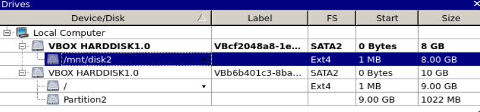
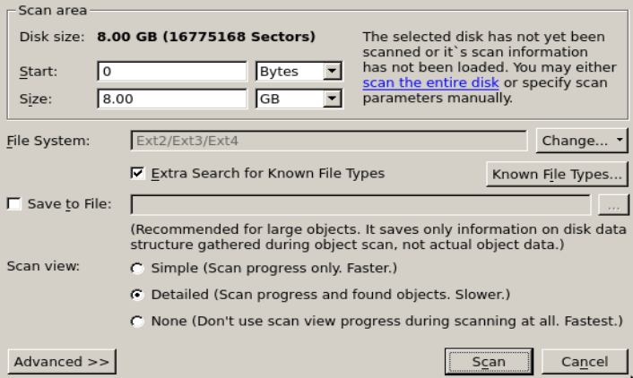
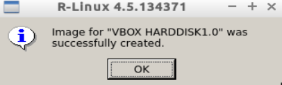

R-Linux, Ext2,Ext3,Ext4 dosya sistemlerini destekleyen bir dosya kurtarma aracıdır. R-Linux, IntelligentScan adını verdiği kendi gelişmiş özelliği sayesinde çok daha esnek aramalar ve dosya kurtarma işlemleri yapabilir. R-Linux ile formatlanmış, arızalanmış veya içindeki veriler silinmiş disklerinizden bilgilerinizi kurtarabilirisiniz. Tabiiki tam bir kurtarma sonucunun oluşması için bir takım şartlar gereklidir.
Bu yazımızda R-Linux uygulamasını kullanacağız ve dosya kurtarma denemeleri yapacağız.
R-Linux Özellikleri
- Grafik arayüze sahiptir.
- Ext2,Ext3,Ext4 dosya sistemlerini destekler.
- R-Linux ile harici medyaları tarayabilir ve dosya kurtarma işlemi yapabilirsiniz. (FlashCard, USB Disk, HafızaKartı vb)
- R-Linux ile disk veya medyalarınızın imajlarını alabilir ve bu imajlardan dosya çekebilirsiniz.
R-Linux indirme ve kurulum
R-Linux uygulamasının internet sayfasından kurulum paketlerini indirebiliriz.
http://www.r-tt.com/free_linux_recovery/Download.shtml

Bu sayfada gördüğümüz gibi hem mevcut Linux dağıtımları için hem de Windows işletim sistemi için kurulum paketi mevcut. Biz Ubuntu için sağlanan paketi kullanacağız. The Linux Variant başlığı altında sistemimize uygun olan kurulum paketini Download bağlantısını kullanarak indiriyoruz.
İndirme işlemi tamamlandığında .deb uzantılı kurulum paketini indirmiş olacağız. Bu dosyayı çalıştırarak sistemimize R-Linux kurulumunu yapıyoruz. Ardından R-Linux uygulamasını kullanabiliriz.
Yazımızı hazırlarken sanal bir ortamda sanal bir disk üzerinde çalışacağız. Ortamımıza ikinci diski ekleyip hazır hale getirdikten sonra içine Belgeler isimli bir klasörü kopyalıyoruz.
Bu klasör içinde resim ve belgelerden oluşan çalışma dosyalarımız bulunmakta. Bu dosyalar içinde silme ve geri getirme işlemlerini yapacağız. Şimdi R-Linux uygulamasını açalım.

R-Linux uygulamasını açtığımızda ana ekranda “Device View” alanı sistemimizdeki diskleri gösteriyor. Bizim üzerinde çalışacağımız disk ekranda seçili olan /mnt/disk2 diski olacak. Şimdi diskimize geri dönüp içindeki verileri kontrol edelim.

Gördüğümüz gibi Disk2’nin içinde belgeler klasörü ve içinde de resim ve döküman dosyalarımız var. Şimdi basit bir deneme yapmak amacıyla bu dosyalardan bazılarını silelim ve R-Linux ile kurtarmaya çalışalım. Klasör içindeki Klavuz.pdf ve cicek.jpeg dosyalarını siliyoruz.

Şimdi R-Linux uygulamasını açalım ve dosyaların silindiği Disk2’de tarama yapalım. R-Linux ana ekranda “Device View” başlığında disklerimizi görmekteyiz.

Diskimiz seçili iken üstteki düğme grubundan “Scan” işlemini çalıştırıyoruz.

Burada “Scan area” alanında diskimizn tüm boyutu görmekteyiz. Bu alanda “scan the entire disk” diyerek diskin tümünü tarama için seçebiliriz. Bu seçim dışında aynı alandan başlangıç noktası belirleyerek de diskin istediğimiz belli bir bölümünü taramamız mümkün.
“Scan view” alanında ise Simple, Detailed ve None seçenekleri var. Bu seçimlerde hızlı-temel tarama, detaylı tarama ve tarama işlemini göstermeden hızlı tarama seçeneklerine sahibiz. Biz detaylı taramayı seçerek tarama işlemini başlatıyoruz. Tarama işlemi başladığında ana ekrandaki log alanında taranan sürücü ve detaylarını göreceğiz.

İşlem tamamlandığında “Extra Found Files” adıyla ana ekranda bir seçim oluşacaktır. Burada tarama işlemi sonucunda disk üzerinde bulunan tüm dosyaları, türlerine göre ayrılmış şekilde görebiliriz.

Ekran çıktısında da göreceğimiz gibi kategorilere ayrılmış şekilde çekilen dosyaların klasörlerini görmekteyiz. Bu klasörlerden tümü veya istediğimizi geri dönebiliriz. Çekilen dosyalardan geri dönme işlemini üstteki menüden “Recover” düğmesini kullanarak yapabiliriz.

Recover ekranında Main ve Advanced isminde iki ekranımız bulunuyor. Main ekranında standart seçimde işaretli olmayanlara değinecek olursak;
Recover security: Kurtarılan dosyanın güvenlik seçenekleriyle kurtarılması için
Skip files with bad sectors: Diskin bozuk kesimlerindeki dosyaları kurtarmaya çalışmaması için
Advanced alanında ise “Aynı dosyadan hedefte olması” durumunda, dosyanın parçalanmış olması durumunda ve gizli dosyaların çekilmesi durumunda üzerine yazma, adını değiştirme veya esgeçme gibi seçenekleri önceden ayarlayabiliyoruz. Bu ekranda herhangi bir ayar değişikliği yapmazsak bu durumlarda R-Linux ekrana görüntü ile bilgi verecek şekilde ayarlı durumda.
Şimdi kurtardığımız klasöre bir bakalım.


Sildiğimiz iki dosya, isimleri farklı olarak sağlıklı şekilde kurtarılmış durumda. Bu dosyaları yine eskisi gibi kullanabiliriz. Dosya isimlerinin farklı gelmesi bir handikap gibi gözükse de R-Linux’un kurtarma işlemini dosya türlerine göre ayırarak yapması işimizi çok kolaylaştırıyor. Yaptığımız deneme temel bir silme ve geri çekme işlemiydi. Şimdi diskimizi formatlayalım ardından üzerine dosyalar yazalım ve tekrar formatlayalım. Bu işlemlerin ardından yukarıdaki dosyalarımızı tekrar çekmeyi başarabilecek miyiz? Deneyelim, görelim.


Disk2’yi unmount edip format attık ve R-Linux çalışma klasörümüzü tekrar Disk2’ye kopyaladık. Şimdi Disk2’yi tekrar formatlayıp R-Linux ile dosyalarımızı kurtarmaya çalışalım.


Tarama işleminin tamamlanmasının ardından ana ekrandaki “Extra Found Files” menüsünü kullanarak recover etmeden geri döndürülecek dosyalara direkt bakalım.
Diskimizin tümünü taradık ve sonuç olarak takip ettiğimiz iki dosya yine kurtarılmış şekilde ekran görüntüsünde görmekteyiz.

Yine isimleri farklı olarak gelse bile R-Linux’un kategori özelliğinden dolayı dosyaları ayırmak ve bulmak çok kolay. Diğer .pdf dosyamız da PDF Document klasörünün içinde.
Yaptığımız iki deneme sonucu itibariyle gördüğünüz gibi R-Linux oldukça başarılı. R-Linux’un başka kullanışlı bir özelliği daha var. Diskin imajını almak ve imajdan dönmek.
Şimdi bir de Disk2’nin imajını alalım.
R-Linux ana ekrandaki “Device View” alanından diskimizi seçelim ve üstteki düğmelerden “Create Image” menüsünü çalıştıralım. Aynı işlemi disk üzerinde sağ tuş ile açılan menüden de yapabiliriz.

R-Linux, diskimizin imajını yukarıdaki ekranda gördüğümüz gibi belirlenen yere alır. Imaj ekranında, istersek alınan imaj dosyasına parola verebilir, imaj dosyasının sıkıştırma oranını belirleyebiliriz. Imaj dosyası .arc uzantısıyla alınıyor. Imaj yolunu belirleyip Imaj alma işlemini başlatıyoruz.


Disk2’nin imajı böylece alınmış oldu. Şimdi R-Linux’ta bu imajı açalım. Bakalım diskimizi bıraktığımız gibi bulabilecek miyiz? ;)
R-Linux ana ekran, üst menüdeki düğmelerden “Open Image” deyip aldığımız imajı açtığımızda “Device View” alanında yeni bir disk olarak göreceğiz. Bu açılan imajdan oluşan sanal bir disktir.

Openimaj işleminden gelen diskimizin Partition1 alanına çift tıklayarak diskin içindeki dosyalara göz atalım.

Imaj içindeki dosyalar $Inode262145 klasöründe gözükmekte. Takip ettiğimiz iki dosyayı da içerik alanında da işaretledik. Şimdi tüm içeriği recover işlemiyle çekmeyi deneyelim.

R-Linux imajdan dosyalarımızı başarıyla çekti. Bu işlemde dosya isimleri orjinal halleriyle kopyalandı. Çünkü imajdan dönme işlemi yedekten dönmek gibi değerlenrilebilir.
Herhangi bir silme veya arızalanma durumu olmadığı için yedek dönmek gibi bir sonuçla R-Linux bize dosyalarımızı verdi.
İmaj denememizden sonra da dosyalarımıza ulaştık. Böylece yaptığımız tüm geri dönme denemelerinde R-Linux başarıyla dosyalarımızı döndürdü.
Umarız kimsenin ihtiyacı olmasın yalnız olursa R-Linux hem başarısı hem de kullanım kolaylığı açısından çok güzel bir alternatif.
Veri kurtarma şartları ile ilgili
Yazımızın başında veri kurtarmanın belli şartlara bağlı olduğuna dair bir cümle geçtik. Buna küçük bir açıklama yaparak yazımızı tamamlayalım.
Bildiğiniz üzere bilgisayarlar veriyi diske ikili sayı sistemine göre kaydeder. Sistem bilgiyi kaydettiği kısma ya 0 yazar ya da 1. Silme işleminin gerçekleşmesi durumunda bilgi gerçekten silinmez. Sadece o kısım artık görülmez ve dikkate alınmaz. Veri kurtarma işlemi, bu ikili sayı sistemine göre kaydedilmiş bilgiyi okumaktır.
Bilgi aslında silinmediği için veri kurtarma yazılımı bu 0 ve 1 bilgisini okur ve aslında silinmemiş bilgiyi geri getirir. Ta ki o kısma yeni bilgi yazılana kadar.
Eğer ilgili kısma yeni bilgi yazılacak olsa artık eski bilgi kurtarılabilir değildir. Yani bizim yaptığımız temel denemelerde de sildiğimiz bilginin üzerinde veri yazılmadığı sürece defalarca bilgiyi kurtarırdık.
Bunun imkansız hale gelmesi için daha önce de söylediğimiz gibi o kısma yeni veri yazılması gerekir.
Hoşçakalın…